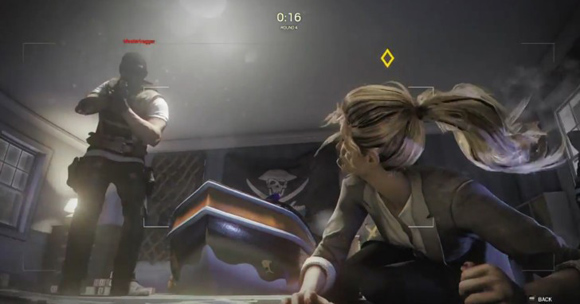
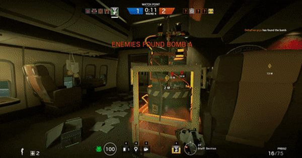
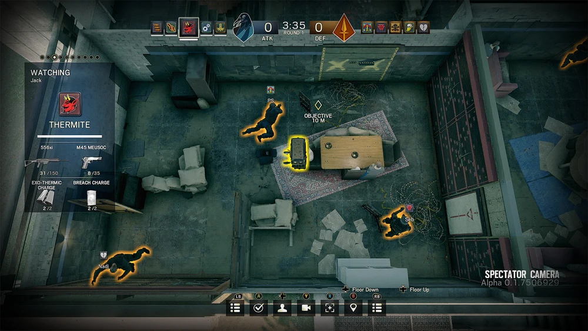

MODOS DE JUEGOS
Rehén
Los defensores deben proteger al rehén de los atacantes. El rehén es colocado en uno de tres lugares aleatorios en todo el mapa. En la fase de preparación, los atacantes usan Drones para buscar la ubicación del rehén. Si los atacantes encuentran al rehén en la fase de ataque, pueden pulsar el botón de acción para comenzar a llevar al rehén a la zona de extracción. Los atacantes ganan si extraen exitosamente al rehén o matan a los agentes defensores. El equipo defensor gana si el tiempo se agota, el rehén es asesinado por el equipo atacante, o si matan a todos los miembros del equipo atacante.

Bombas
Sí se han colocado dos bombas en el lugar objetivo. Como atacantes, usted y su equipo deben intentar desactivar una de las bombas activando el defuser. Una vez activado, el defusor tomará 45 segundos (60 segundos en Caza terrorista) para desarmar la bomba. Los atacantes ganan la ronda si pueden desarmar una de las dos bombas, o si el equipo enemigo es eliminado. Los defensores deben evitar que los atacantes activen el defusor o deben desactivar el defusor que ya ha sido activado. Los defensores pueden ganar destruyendo el defusor después de haber sido plantado, o alternativamente, eliminando al equipo enemigo antes de que puedan plantar el defusor.

Asegura la zona
Los atacantes deben localizar la habitación que contiene el agente bioquímico y mantener la posición dentro de la área donde se encuentre por lo menos 10 segundos consecutivos. Por otro lado, el equipo de defensores debe evitar que se bloquee la sala y para esto se debe mantener una presencia dentro de la misma habitación. El temporizador puede ser interrumpido por cualquier defensor que entre en la sala, por lo que los atacantes deben trabajar para eliminarlos o forzarlos a salir de la habitación.
